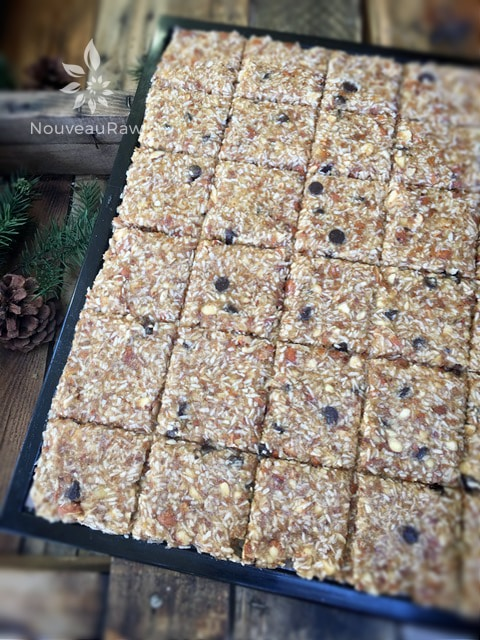

Banana Nut Brittle

~ raw, vegan, gluten-free ~
This recipe is sooo delicious! If you love banana bread and all things crunchy… you will love this brittle recipe. You can really use any nut that you wanted to or had on hand. Sometimes I make it with chocolate chips or raisins. In the photos provided, I have shown a batch with and without the chocolate chips. Both were amazing.
This recipe goes together quickly, in fact, the hardest part was staying out of the dehydrator, sneaking bits and pieces. Oh, and don’t get me started on the aroma, oooooh the aroma was delightful. (too late) No need for an air diffuser pumping out stress-reducing essential oils.
Just put the dehydrator in a central location in the house, plug it in, and be prepared to be enveloped in your grandmother’s arms… a place of warm snuggles and happy memories. Well, that’s where it transported me. That “place” may be different for you. :)
Don’t let them fool you…
It appeared at first as though these crackers would never firm up and be crunchy. I even kept it in the dehydrator a bit longer, and I was shaking my head thinking that there is no way it would ever dry out enough to be crispy.
However, when I finally pulled it out and allowed it to cool on the kitchen counter, that is when things changed, and it went from chewy to crispy! This stuff is addictive!
I bagged some up for my mother to take on the airplane with her and I froze the rest. Update… mom said that she couldn’t stop eating them once she opened the bag on the plane. She ended up sharing them with the woman sitting beside her. That opened up a conversation all about NouveauRaw and healthy eating.
Anyway, I have a pretty strong feeling that you will fall in love with this recipe. Be sure to leave a comment below and have a blessed day, amie sue
yields 60 pieces (depending on size)
- 2 1/2 cups (394 g) pitted dates
- 8 (999 g) bananas, ripe and peeled
- 1/4 cup(34 g) flax flour
- 1/2 tsp Himalayan pink salt
- 3 cups (395 g)raw almonds, soaked & dehydrated, roughly chopped
- 3 cups (288 g) dried, coconut flakes unsweetened
Preparation:
- In the food processor blend bananas, dates, flax meal, and salt until smooth.
- The banana weight is without the skins.
- Stir in nuts and coconut.
- Evenly spread 1/4″ thick on a dehydrator tray lined with non-stick sheets. Score into the size and shape you want.
- Dehydrate at 145 degrees (F) for 1 hour, then reduce to 115 degrees (F) for 12 hours, then flip them over and continue dehydrating for another 12 hours.
- Allow them to fully cool before storing in a sealed container in the refrigerator or freezer for up to 4 months.
Culinary Explanations:
- Why do I start the dehydrator at 145 degrees (F)? Click (here) to learn the reason behind this.
- When working with fresh ingredients, it is important to taste test as you build a recipe. Learn why (here).
- Don’t own a dehydrator? Learn how to use your oven (here). I do however truly believe that it is a worthwhile investment. Click (here) to learn what I use.

Here it is, ready for the dehydrator. Spread it evenly and score to the desired size.
© AmieSue.com